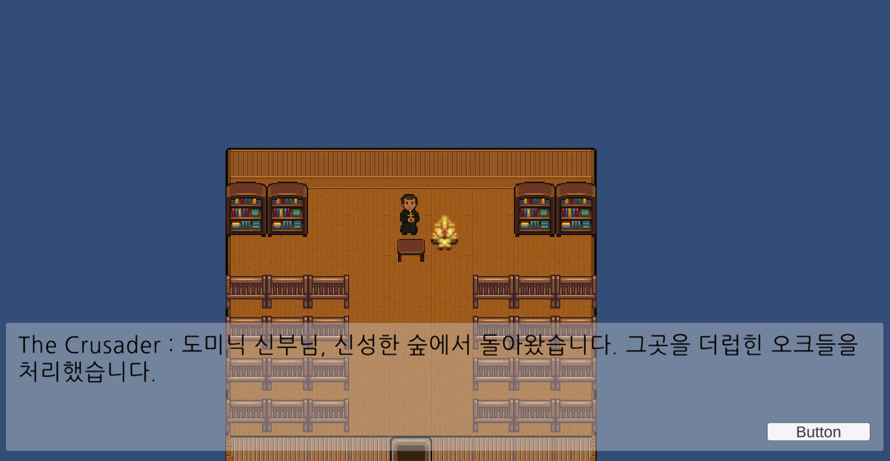
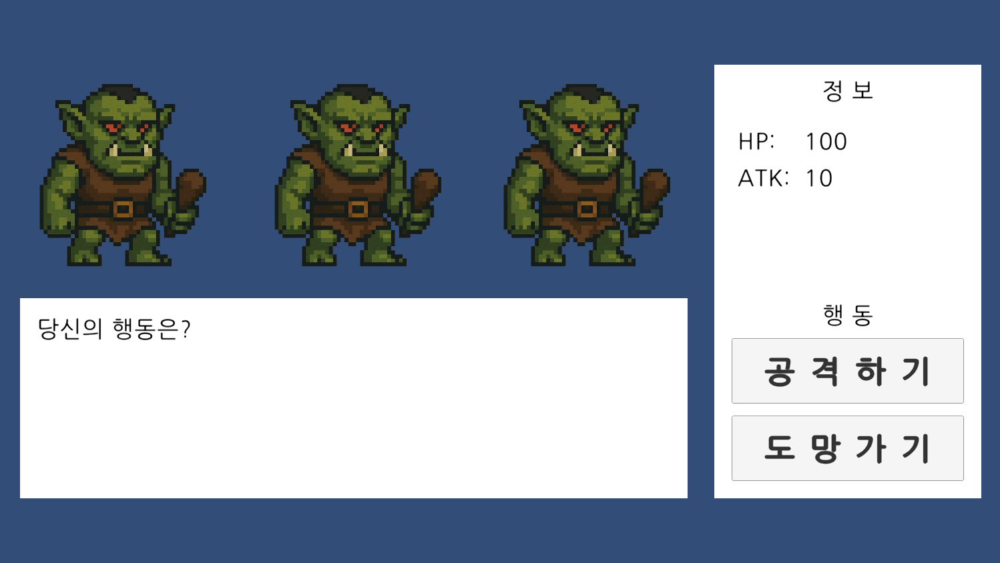
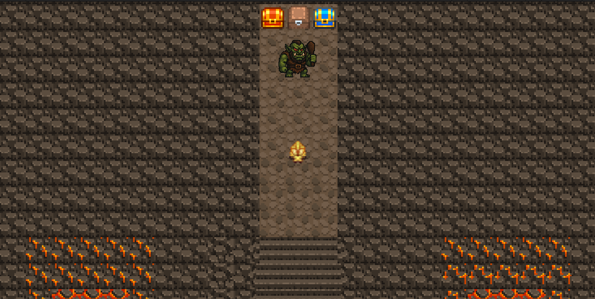

Step 4. 최종 결과Results
시나리오 생성 프롬프트 체인을 구성하고, 이를 통해 생성한 시나리오를 실제 게임에 적용 가능한지 실험을 통해 확인하였다. 실험 환경은 Unity(2022.3.51f1) 엔진을 이용한 탑뷰 시점의 타일 기반 2D 어드벤처 게임이며, 플레이어는 키보드 입력을 통한 이동, 랜덤 인카운터 방식의 턴제 전투, 오브젝트 상호작용이 가능하다. 전체 맵은 루트 노드인 게임 월드, 지역 내부, 건물 내부 순서의 계층 구조로 구성된다.
1
게임 화면 Gameplay Screenshots

전체 월드

NPC 대화 화면

전투 화면

최종 보스전
2
제약 사항Constraints
시간적 요소: 동적 환경 변화의 제한
리소스의 정적 특성으로 인해 날씨, 계절 등의 동적 변화를 게임 환경에 반영하는 데 한계가 있었다.
수면 관련 오브젝트(침대)와의 상호작용을 통해 다음 날 아침으로 전환되도록 구현하여 자연스러운 시간 진행을 표현
환경적 요소: 시각적 표현의 단순화
리소스의 범위 제한으로 인해 건물의 세부 구조물(뒷문, 창문, 굴뚝 등)이나 지형의 세부 속성(흙의 색깔, 강의 색깔 등)을 상세히 표현하기 어려웠다.
건물 구조물 및 지형 속성의 시각적 표현을 타일 기반으로 간략화
★
NPC의 위치 및 대사, 퀘스트 부여·진행·완료 등 생성된 데이터를 통해 게임이 시작부터 종료까지 일관되게 구성됨을 확인하였다. 매 회차마다 서로 다른 대사, 퀘스트, NPC로 이루어진 완전히 새로운 스토리를 제공함으로써, 재플레이 가치를 극대화하고 게임의 생명 주기를 연장할 수 있는 기반이 될 것으로 기대한다.